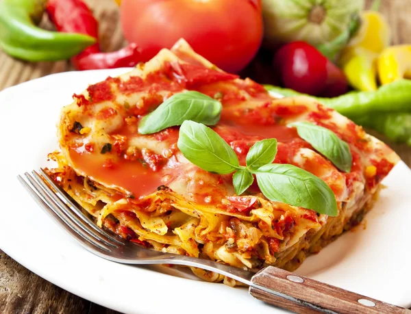

Flavorful and tasty vegetarian lasagna
Lasagna with cottage cheese and lots fo veggies truly delicious.
Great dinner for you and your family!
Ingredients:
Veggies and spinach
- 2 tablespoons extra-virgin olive oil
- 3 large carrots, chopped
- 1 red bell pepper, chopped
- 1 medium zucchini, chopped
- 1 medium yellow onion, chopped
- 0,25 teaspoon salt
- 5 to 6 ounces baby spinach
Tomato sauce
- 1 large can diced tomatoes
- 0,25 cup roughly chopped fresh basil + additional for garnish
- 2 tablespoons extra-virgin olive oil
- 2 cloves garlic, pressed or minced
- 0,5 teaspoon salt
- 0,25 teaspoon red pepper flakes
Remaining ingredients
- 2 cups low-fat cottage cheese, divided
- 0,25 teaspoon salt, to taste
- Freshly ground black pepper, to taste
- 9 no-boil lasagna noodles
- 2 cups freshly grated low-moisture, part-skim mozzarella cheese
Steps:
Veggies
- Preheat the oven to 220 degreed C.
- To prepare the veggies: In a large skillet over medium heat, warm the olive oil.
- Once shimmering, add the carrots, bell pepper, zucchini, yellow onion and salt.
- Cook, stirring every couple of minutes, until veggies are golden on the edges, about 8-12 minutes.
- Add a few large handfuls of spinach. Cook, stirring frequently, until the spinach has wilted.
- Repeat with remaining spinach and cook until all of the spinach has wilted, about 3 minutes.
- Remove the skillet from the heat and set aside.
Tomato sauce
- Pour tomatoes into a mesh sieve or fine colander and drain off the excess juice for a minute.
- Then, transfer the drained tomatoes to the bowl of a food processor.
- Add the basil, olive oil, garlic, salt and red pepper flakes.
- Pulse the mixture about 10 times, until the toamtoes have broken down to an easily spreadable consistency.
- Pour the mixture into a bowl for later. Rinse out the food processor and return it to the machine.
- Pour half of the cottage cheese into the processor and blend it until smooth.
- Transfer the mixture to large mixing bowl.
Lasagna
- Transfer the cooked veggies and spinach mixture to the bowl of the food processor.
- Pulse until they are more finely chopped.
- Transfer the mixture to the bowl of whipped cottage cheese.
- Top with the remaining cottage cheese, then add 0,25-0,5 teaspoon salt and lots of freshly groud black pepper.
- Stir to combine.
- Spread 0,5 cup tomato sauce evenly over the bottom of a 9" by 9" baking dish.
- Layer 3 lasagna noodles on top.
- Spread half of the cottage cheese mixture evenly over the noodles.
- Top with 0,75 cup tomato sauce, then sprinkle 0,5 cup shredded cheese on top.
- Top with 3 more noodles, followed by the remaining cottage cheese mixture. Sprinkle cheese on top.
- Top with 3 noodles, spread toamto sauce over the top. Sprinkle with cheese.
- Wrap a sheet of parchment paper or foil around the top of the lasagna.
- Bake, covered, for 18 minutes, then remove the cover, rotate the pan by 180 degrees and cook for another 10-12 minutes.
- Remove from the oven put fresh basil on top and enjoy!